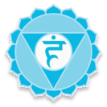
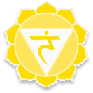
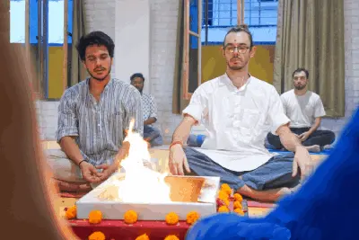
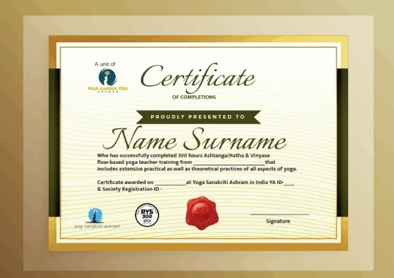
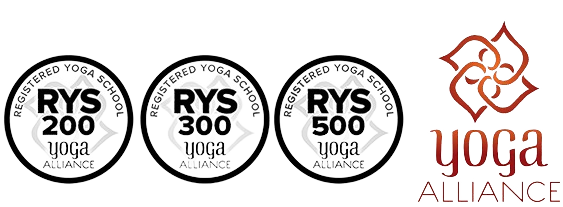
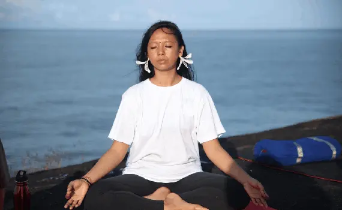
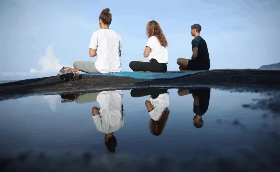

We Yoga Goals India situated amidst mountain series of Himalayas, far from the cacophony of crowded n polluted environment, river Ganga flowing nearby is a guarantee of eternal peace and surely a way to know yourself! As we believe in building personna would tell the image one carries for himself and others. We also believe that we are under the governance of ruling destiny but there is a personality that ruled over and above all is “personality overruled.”. We help everyone to know or grow their personality in a way that provides great exposure towards life. Our veteran in Vedic yoga Sanskriti helps you attain to know the positive energies how better useful to keep you intact all the time with the few steps of Nitya yoga and believe in yourself is certainly a way to self-resilience!

Learning in Yoga sanskriti would ensure spiritual and phenomenal growth help attaining the goal of the individual. Our veteran faculty have proved the mantra to success.
We provide a combined education of yoga sanskriti and meditation with the help of our qualified veterans to get acquainted with the basics of our daily routine! We strongly believe that every human being is blessed with a basic instinct that keeps him alive while fighting with the malfunctioning mechanism of evil throughout the entire lively process!

Pandemic has drastically affected us causing a great destruction of immune system and being in danger of several infectious diseases. Now the Vedic yoga asanas, therapies and meditation has become a need for every human being to sustain with the environment as needed of survival for the fittest. Covid-19 has come up with a lot of diversity in personal and professional terms that have significantly affected us physically, socially, and economically having an adverse affect on our body and brain. Having non exposure to sunlight and restrictions on physical appearance to public places have come up with several ailments of the physical diseases like deficiency of vitamin and mineral to our physical strength. Now we have more ortho diseases in large than ever! We are undoubtedly a match for everyone as we have asanas, therapies and meditation to deal with any such ailments or pandemic forever!


One of our best attraction is our satvik food that enfuse energy, calm in the nerve to understand the basics of yoga. Imparting yoga education is an effort to let the world know the best way of living the meaningful life as we are submissive to nitya yoga help everyone to know himself. Yoga sanskriti not only help to know yourself but also help ascertaining the process being laid off a long ago by the human being to make favourable the livelihood as precious as water for life!
We precisely cover each topic of yoga science such as pranayam, meditation etc. Yoga sanskriti has a comprehensive course of learning yoga asanas, meditation, Ayurveda, retreat training in 200, 300 and 500 hours respectively.
Retreat education- magical retreat education has precisely a comprehensive lookout all features comes with yoga asanas and meditation! This has also ensures the best practices of nitya yoga asanas in routine life. Those who brings glory to living adequate standard of livelihood are recommended to undergo the retreat training 3, 6, 9 days respectively.

